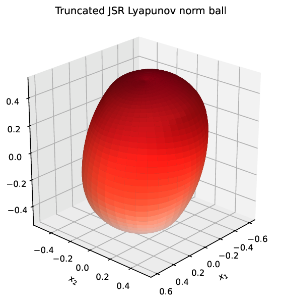

Insight
An exact switching representation
The Bellman maximum admits a finite-difference stochastic-policy representation. This turns the nonlinear mean update into an exact switched linear error recursion.
Reinforcement learning · Switching systems
arXiv preprint · 2026
Department of Electrical Engineering
Korea Advanced Institute of Science and Technology (KAIST)
Qθ(s, a) = φ(s, a)⊤θ
The Bellman maximum changes the active policy.
xk+1 = Aμkxk + αwk
Policy-dependent linear modes, plus sampling noise.
ρ(𝒜α) < 1
A common Lyapunov norm controls all switching modes.
Analyze the products of update matrices to understand when linear Q-learning is stable.
Insight
The Bellman maximum admits a finite-difference stochastic-policy representation. This turns the nonlinear mean update into an exact switched linear error recursion.
Method
The joint spectral radius (JSR) measures worst-case growth across switching sequences. When it is below one, a common Lyapunov norm certifies contraction.
Results
The framework yields deterministic convergence, stochastic error bounds under i.i.d. sampling, and stability certificates for regularized linear Q-learning.
Q-learning is a fundamental algorithmic primitive in reinforcement learning. This paper develops a new framework for analyzing linear Q-learning from a switching linear system (SLS) viewpoint, where linear Q-learning denotes Q-learning with linear function approximation. We derive a stochastic SLS representation of the linear Q-learning error and obtain a finite-time error analysis for linear Q-learning through the joint spectral radius (JSR) of the associated SLS family; the JSR is the exact worst-case exponential rate of the corresponding SLSs. The JSR-based rate is tied to the intrinsic worst-case exponential rate of the SLS representation. Moreover, we provide a JSR-based certificate for convergence of linear Q-learning, which can be less conservative than one-step norm bounds.
The problem
Approximating a Q-function with linear features reduces the number of parameters. The learning dynamics, however, remain nonlinear: the maximizing action can change with the current parameter.
A bound on a single update can miss how successive modes interact. The paper instead studies the family of matrices induced by the Bellman maximum and the products they generate.
Which geometry makes every admissible mean update contract?
The answer is a norm constructed from switched matrix products. Its contraction rate can approach the JSR of the associated arbitrary-switching family.
From problem to solution
For any pair of parameters, a suitable stochastic policy μ represents the difference between their mean updates:
Each stochastic-policy mode lies in the convex hull of the finite deterministic-policy family 𝒜α. The JSR is unchanged by this convexification.
Unlike a one-step norm bound, this quantity captures the long-run effect of switching. The resulting certificate is sufficient for the actual Bellman-generated recursion.

Main theoretical results
If ρ(𝒜α) < 1, the mean update is a global contraction in the constructed Lyapunov norm. It has a unique projected Bellman fixed point θ⋆, and the deterministic iterates approach it exponentially.
‖θk − θ⋆‖2 ≤ √Cε βεk ‖θ0 − θ⋆‖2
βε = ρ(𝒜α) + ε, with 0 < ε < 1 − ρ(𝒜α). Theorem 1.
Under i.i.d. sampling, the error splits into a decaying initial-condition term, a switching-related transient, and a noise term. With fixed problem data, stability at a reference step size, and a sufficiently small constant α, the unprojected recursion is mean-square bounded.
Expected error ≤ decaying transients + O(√α)
The O(√α) statement describes the final error-bound term as α tends to zero, with the initialization fixed. At a fixed nonzero step size, the bound generally retains a residual term; it does not establish a positive lower bound on the actual error.
Adding an ℓ2 penalty with weight η shifts every direct mode by −αηI. This yields regularization-dependent JSR bounds and sufficient stability conditions.
Aπη = Aπ − αηI
Regularization and step size must be considered together: stronger regularization can improve one part of the stability bound while tightening the admissible step-size range.
The setup uses a finite discounted MDP, a feature matrix with full column rank, positive state-action sampling probabilities, and i.i.d. observations. For Theorems 5–6, the transition kernel, rewards, discount, features, and sampling distribution remain fixed as α varies; a reference step size ᾱ must satisfy ρ(𝒜ᾱ) < 1.
The result applies to a deterministic initialization and 0 < α ≤ min{ᾱ, 1/(2C1σ12)}, with the constants defined in the paper. The second term in the minimum is interpreted as +∞ when σ1 = 0. These small-step results establish boundedness without assuming bounded iterates in advance. The earlier Theorems 3–4 instead impose a bounded-iterate assumption.
The target is the projected Bellman fixed point within the feature class. The stated guarantees do not cover arbitrary Markovian sampling or unrestricted step sizes.
Interpreting the certificate
The JSR allows every switching sequence. Actual Q-learning follows only the modes selected by its Bellman dynamics. A family can therefore fail the arbitrary-switching test while its Bellman-generated trajectory still converges.
In the paper’s Example 4, the two scalar modes are 0.397 and −1.304, so their JSR is 1.304 > 1.
A negative parameter uses the second mode once and becomes positive. Every later update then uses the contracting mode 0.397.
Bellman-generated path · θ0 = −1
−1 → 1.304 → 0.518 → 0.206 → 0
First steps rounded; the final arrow denotes the limit.
Arbitrary switching can repeat the unstable mode
xk = (−1.304)kx0
Allowed by the switching family, but not repeatedly realized by this Bellman recursion.
Numerical illustration of the exact recurrence in Example 4; not a benchmark experiment. The JSR gives the exact worst-case exponential rate of the associated switching family, rather than necessarily the rate of an individual Q-learning trajectory.
Paper presentation
A video presentation of this paper on the Next State AI channel, covering the connection between Q-learning, switching systems, and stability analysis.
@misc{lee2026switchingtheoryqlearninglinear,
title={A Switching System Theory of Q-Learning with
Linear Function Approximation},
author={Donghwan Lee and Han-Dong Lim},
year={2026},
eprint={2605.11021},
archivePrefix={arXiv},
primaryClass={cs.LG},
url={https://arxiv.org/abs/2605.11021}
}